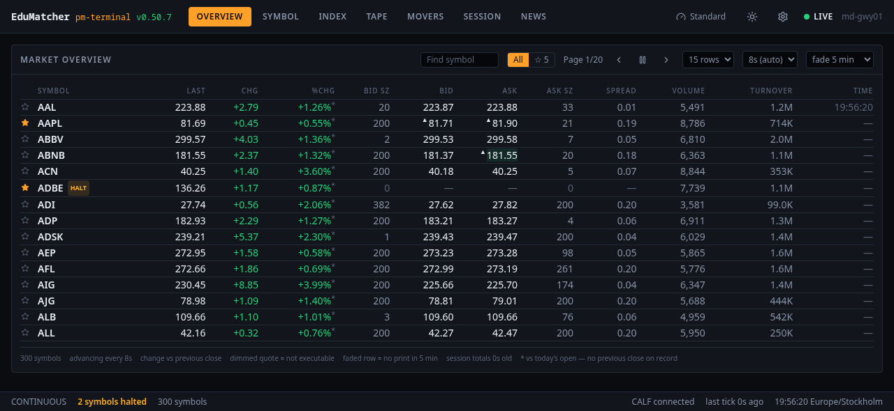
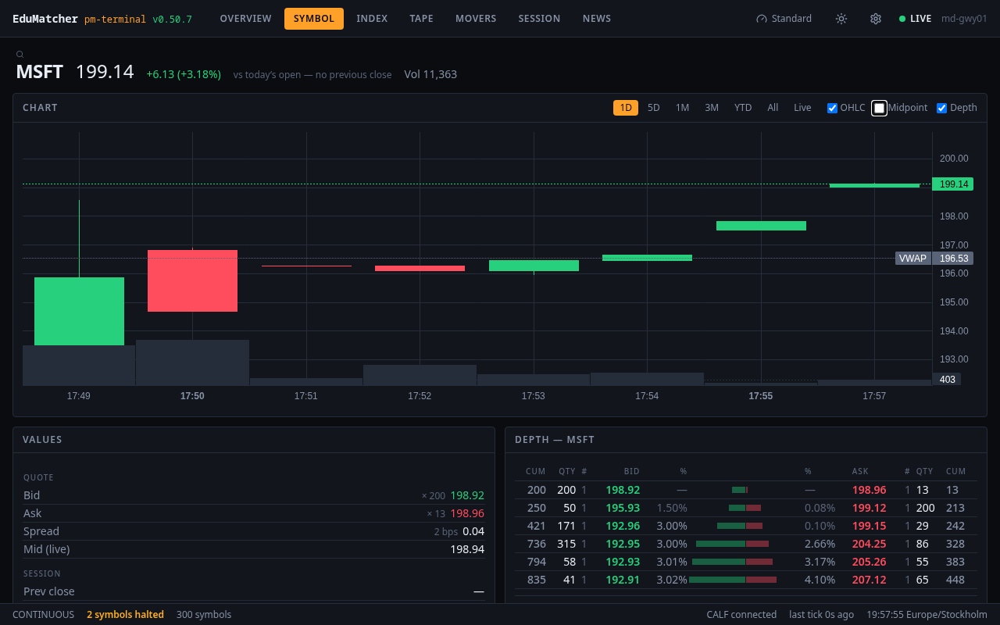
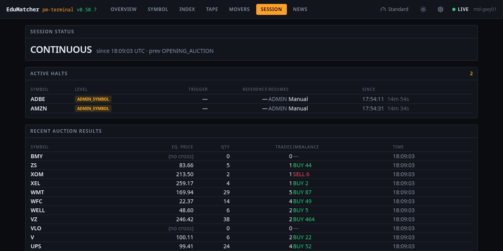

Trader Information Terminal — "TapeDeck" (pm-terminal)¶
Learning objectives
After reading this page you will understand:
- What the Trader Information Terminal is for, and when to use it instead of a trading or administration tool
- How to open it, and what it needs from the exchange
- What each of the seven screens is meant to help a viewer understand
- How to recognise normal disconnected, missing-history, and no-index states without mistaking them for broken screens
Overview¶
TapeDeck is the friendly nickname this guide uses for the Trader
Information Terminal, whose system name is pm-terminal and whose source code
lives in web-apps/terminal-gui/. It is a read-only market display for the EduMatcher
exchange: a browser window for watching live prices, trades, auctions, halts,
indexes, and depth-of-book information.
It is deliberately not a trading application. There is no order entry, no login screen, and no write path from the browser back into the exchange. Use it for a classroom wallboard, a demo display, an observer workstation, or a quick operator check that the market-data feed is alive. Use the trading client for placing orders, and the administration tools for changing exchange state.
The terminal shows live data from the CALF market-data feed and reads historical bars and index history through the API Gateway. The browser never sees an API key; the small bridge process running beside the web UI holds the upstream connections.
Opening it¶
TapeDeck runs on port 8090: open http://localhost:8090 on the machine
running the exchange, or the address your instructor gives you. There is no
login. It starts with the rest of the exchange in the container setup
(./edumatcher.sh start, or make up-all from a source checkout).
The page needs the market-data gateway (pm-md-gwy) for live prices, and the
API gateway (pm-api-gwy) for charts, previous close and index history; with
only the first, live prices tick and the history panels stay empty.
How to install, start and configure TapeDeck — on its own, on a separate display server, or for development — is in the Operator's Guide chapter Deploying TapeDeck.
A tour of the interface¶

Page 1 of 20 on a 300-symbol exchange, advancing every 8 seconds. AAPL and ADBE
are starred into the watchlist (the toggle counts five pinned symbols), ADBE
carries a HALT badge, and the status strip reports 2 symbols halted and
the age of the last tick beside the CALF state. Every %CHG has its *: this
exchange has no previous close on record yet, so change is measured from
today's open.
Top bar¶
A single row (not a collapsible sidebar — seven destinations is small enough for one row, and a data-dense terminal wants its horizontal space for numbers, not navigation chrome) holding:
EduMatcher pm-terminal v<version>— the app name and the release it was built from.- The seven view tabs: Overview, Symbol, Index, Tape, Movers, Session, News.
- A density control (gauge icon) that cycles Lobby → Standard →
Dense. This is a display preference, not a mode — every route and every
data point stays reachable at every setting; only defaults change (larger
type and a longer page delay under Lobby, tighter rows and shorter delay
under Dense). It persists to the browser's
localStorage, so a different browser or profile always starts on Standard. - A theme toggle (dark by default — the working default for a trading screen — with a full light palette for bright rooms and projectors).
- A settings cog holding Font size — XS, S, M, L, XL or XXL, XS by
default — which scales the whole page, for a projector or a screen read
from across a room. It is independent of density, persists to the
browser's
localStorage, and (as the popover says) works in Chrome and Safari only. - A connection indicator:
LIVE(green),RECONNECTING(amber), orOFFLINE(red), reflecting the bridge's own CALF session state, plus the gateway id it is talking to.
Status strip (footer)¶
A single-line summary meant to be readable from across a room. It opens with
the session indicator every EduMatcher GUI shows, exactly as the Trading GUI
does in its top bar: the session phase as a coloured badge, the next phase and
the time left to it when the feed has named one (Continuous → Closing
Auction in 03:08), and the clock in the exchange session timezone. The badge
reads Unknown until the feed has reported the phase, and whenever the CALF
connection is not live. Then the number of currently-halted symbols, the
total symbol count, the CALF connection state and the age of the last
market-data tick.
Connection state and data age are two different readings, on purpose
"CALF connected" only says the pipe is open — it says nothing about whether anything is actually coming down it, and a feed that has gone silent behind a healthy socket is exactly the failure a reader most needs to catch. The status strip shows both: connection state, and separately, how long it has been since the last tick arrived. A silently frozen exchange still reads "CALF connected" but its tick age keeps climbing.
Screen tour¶
Market Overview¶
The default landing view: every tradable symbol, paginated, meant to run unattended on a classroom or lobby display just as well as be actively browsed.
Key behaviors:
- Auto-paging. Rows are split into pages sized to fit the viewport
(
⚙control offers 3s/5s/8s/15s/30s dwell times, or a density-based default), so the grid never needs to scroll — useful for an unattended display with no mouse. Hovering the grid, sorting a column, or typing in the symbol search suspends auto-advance (a reader who is actively interacting with the board should not have it slide out from under them); the manual‹/›/pause controls keep working regardless. - Every row stays live on every page. Paging is purely a rendering concern — the bridge already holds one wildcard subscription covering every symbol, so there is no per-page subscribe/unsubscribe to do, and numbers on a page you are not currently viewing never go stale.
- Sortable columns and a type-ahead symbol search — both narrow/order what is shown without touching the underlying subscription.
- Watchlist. Click the
☆next to any symbol to pin it; theAll/☆ Watchlisttoggle switches the grid between paging through every symbol and paging through only pinned ones. This is client-only,localStorage-persisted state — there is no server-side watchlist and nothing to log into. - A row fades after a configurable silence threshold (
fade …control — choices from 1 minute to 1 hour, or off). The right value is a property of the exchange, not of the terminal: a busy, liquid book and a thin classroom exchange want very different thresholds, so it is exposed rather than hardcoded. - During a call auction phase, the quote columns (
Bid/Ask) are replaced by auction-indicative columns (indicative uncross price/quantity, imbalance) for symbols currently in an opening or closing auction — a call phase is a different kind of market, not a display preference, so the grid follows it automatically rather than offering a toggle. - Not-executable banners. When the whole board is outside continuous
trading (closed, or in a call auction), a banner says so explicitly rather
than merely dimming the numbers — the prices and volumes shown remain an
accurate record, they are just not currently tradable. A separate banner
appears if the previous-close lookup failed (percentage change is then
measured from today's open instead, and marked with a small
*) or if the history service itself is unreachable (Open/Volume/Turnover columns go blank; live prices are unaffected).
Symbol Detail¶
The deep-dive view for one instrument: a candlestick + midpoint chart, a values table, and an optional depth ladder. Large-screen only, by design — there is no responsive mobile layout.

One-minute OHLC candles with their volume, the VWAP line and the last price
(Midpoint is toggled off). Below, the Values panel and, beside it, the
Depth-of-Book ladder: the best prices meet in the middle, the # column
counts the orders at each level, and the percentage beside each price is its
distance from the touch, which shows at a glance that the levels around
192.9 and 204–207 are about 3% away.
- Header. Symbol, session badge, last price, change and %change (always quoted against the previous close, footnoted when no previous close is on record and the figure falls back to today's open instead), and today's volume.
- Chart. Time-window presets (
1D/5D/1M/3M/YTD/All/Live), free-form drag-zoom, and two independently toggleable series: OHLC candlesticks (built from historical bars, with the live-forming bar updated in place from CALFTRADEprints) and a spliced midpoint line — a coarser, 15-minute-resolution historical segment giving way to a tick-by-tick live segment from CALFTOP, drawn in a slightly muted style where it is the coarser data. A reference line for the previous close is always drawn, and a VWAP line appears on the1D/Livepresets only (VWAP is a same-session benchmark; drawing it across a multi-day preset would be quoting today's average against days it has nothing to do with). - Auction and halt context. An auction uncross fills a dismissible banner (equilibrium price or "no cross," matched quantity, and any residual imbalance) that distinguishes an opening/closing auction, a circuit-breaker reopening auction, and a startup/recovery uncross by name, rather than calling all three "auction uncrossed." A halted symbol expands to show the circuit-breaker detail — trigger level, trigger and reference price, and a corridor bar showing the price band the symbol may reopen inside, with the last indicative price marked against it. This is the visual explanation of why a halt is still running: if the marker sits outside the band, the call phase was extended rather than printing.
- Values panel and Depth ladder. The Values panel is always shown; the
☐ Depthtoggle fills the panel beside it with the Depth-of-Book ladder, which otherwise only says to turn the toggle on. It is off by default on purpose: unlikeOHLC/Midpoint, which reuse subscriptions the bridge already holds for every symbol, turning Depth on causes the bridge to open a brand-new per-symbol CALF subscription — so it is opt-in per viewer, a heavier, deliberately-requested data stream.
Depth-of-Book¶
A Level 2 ladder (aggregated quantity per price level — never per-order identity, which CALF does not carry at any version) for whichever symbol currently has the Depth toggle on in Symbol Detail. It is not its own navigation tab.
Columns run outward from the touch in both directions —
Cum | Qty | # | Bid ‖ Ask | # | Qty | Cum — so the two best prices meet in
the middle and the cumulative totals sit at the outer edges, where the eye
ends up after scanning inward. Two things worth calling out:
- The
#column is the count of individual resting orders aggregated into that price level — genuinely useful context a bare quantity doesn't convey (1,400 shares from one order reads very differently than the same 1,400 split across four), and it costs nothing extra sinceCOUNTis already on the CALF wire. - Rows are evenly spaced regardless of price gaps, with the actual distance from the touch shown as a percentage figure beside each row instead. Spacing rows by price would collapse to unreadable slivers the moment one level sat far out; the trade-off is that a lone level far from a tight cluster would otherwise look like just the next rung down, which is exactly what the percentage-distance figure (and a subtle highlight when a level is unusually far out) corrects for.
A Bid depth / Ask depth / Imbalance summary line below the ladder states the book's lean as a percentage (e.g. "62% bid") rather than a bid:ask ratio, since a ratio's useful range is lopsided (0.2 and 5.0 are the same imbalance mirrored) while a percentage reads the same distance from 50% either way.
Index View¶
Headline level and a historical chart for a configured exchange index (see Market Index).
The headline level, change, and session badge always come from the live
CALF INDEX stream, never from a historical REST row for the current date —
/history/index-daily's close_level is only guaranteed final once the
session for that date has actually closed, so quoting it live for today
would risk showing a figure that is still moving. Open/High/Low are safe to
read from the REST row even intraday, since those are running-so-far values
that only get more accurate as the day progresses. Switching indexes (when
more than one is configured) costs nothing upstream — the bridge holds a
standing subscription for every configured index regardless of which one a
given tab is currently viewing. If the exchange has no index configured at
all, the tab still exists and shows an explicit empty state rather than
being hidden, so the tab row never shifts between differently-configured
classroom exchanges.
Trade Tape / Time & Sales¶
Every print on the exchange, newest first, filterable by symbol.
The symbol filter narrows what is displayed; the bridge's underlying
SYM=* wildcard subscription means every symbol's prints are already
arriving regardless of the filter, so switching it is instant and free.
Pause freezes the visible rows without losing anything — the tape keeps
recording underneath, and Resume shows the current state rather than a
gap where the pause was.
Gap markers are a real, shipped feature, not a hypothetical
If the bridge's CALF connection drops and cannot fully repair a symbol's
trade sequence on reconnect (the replay window has already rolled past
the missed messages), the tape shows an explicit marker row — "gap in
the tape — some prints for SYMBOL were missed" — in place among the
prints it falls between, rather than silently omitting the missing
prints or, worse, saying nothing at all. A record with an unmarked hole
in it is worse than one that admits the hole, because a viewer has no
way to tell it apart from a genuinely quiet stretch. This is the direct
result of a real CALF protocol fix made while building TapeDeck.
Movers¶
A different ranking over the same data the Overview grid already computes — no new subscriptions.
Three tabs: Gainers and Losers rank by percentage change from the previous close (falling back to today's open, and labelled as such, when no previous close is available); Active ranks by session turnover (value traded) instead — a common third view on real market boards, and cheap here since Overview already computes turnover per symbol. Each row's bar is scaled relative to the largest value currently shown on that tab.
Session & Halt Status Board¶
Three panels in one view: the exchange-wide session phase, every symbol currently halted with its full circuit-breaker detail, and the auctions that have uncrossed since the tab was opened.

Two operator halts (ADBE, AMZN): level ADMIN_SYMBOL, no trigger or
reference price, resuming only when the operator clears them. Below, the
opening auction's results, newest first: the equilibrium price, the matched
quantity, the number of trades and the residual imbalance per symbol, and
(no cross) where nothing could match.
- Session status names the current phase and places it in the
exchange's timetable, all in the exchange's time zone:
- This week: each day's hours from pre-open to the close, with closed days dashed and bank holidays named.
- Timetable: the day's phases in order (Closed, Pre-Open, Opening Auction, Continuous, Closing Auction, Closed), each arrow labelled with the time of that transition. The current phase is filled in the top bar's colour and marked NOW. When today does not trade, the next trading day is shown instead.
- A bar of the whole day from 00 to 24, with a marker at the exchange's
current time. The marker is hidden while the session is off its
timetable, for example after an operator moved it by hand, or when
pm-schedulerruns a compressed simulation clock. - Next bank holiday: the next holiday that falls on a normal trading day, and whether the exchange closes or runs holiday hours.
- Active halts shows, per halted symbol: circuit-breaker level, trigger
and reference price (blank for an operator-initiated halt, which carries
neither), how and when it resumes (a converted wall-clock time for a timed
halt, or
Manualfor one that only ends on an explicit operator action), and how long it has been halted. - Recent auction results is a session-scoped, client-side ring buffer of
every auction uncross seen since the tab opened — not a durable audit
trail (that is
pm-index's own structural log, surfaced separately via the Index View's "Recent changes" strip). An omitted equilibrium price is labelled(no cross)rather than shown as a blank, since "no crossable interest at all" is a meaningfully different outcome from a price, just an unusual one. - Opening this view is itself one of the two triggers for the bridge to hold
a per-symbol
CBsubscription (the other is opening that symbol's own Symbol Detail view) — closing the tab releases every subscription it was the sole reason for.
News¶
The headlines pm-market-sim publishes (see
The market model),
newest first, with the same badges as the trading GUI's
News screen: RUMOUR with its
credibility, and CONFIRMED/RETRACTED when a rumour resolves. A retracted
rumour and its retraction are struck through. The time has the date in
front when it is not today.
The view shows everything pm-market-sim has recorded, kept for
news.retention_days (90 days unless your operator changed it). Restarting
the terminal or the exchange loses none of it. Above the table:
| Control | What it does |
|---|---|
| Symbol or sector | A symbol also shows its sector's news, a sector its symbols' news; market-wide news always shows |
| Time window | Last hour, Last 24 h (the default), Last 7 days, Last 30 days, or All. The window rolls with the clock |
| Status | Any status, Rumours, Confirmed or Retracted |
| Sentiment | Any sentiment, Positive or Negative |
| Page n/m, the arrows and "rows" | 15 headlines a page by default (5, 15, 25 or 50, remembered), with the number that match beside it |
The window, status, sentiment and page size you pick are remembered in this browser. Page 1 follows the news as it arrives. When you go to a later page, the view holds the window where it was, so new headlines don't push the rows you are reading down a page. A chip such as 4 new counts what arrived since then, and clicking it goes back to page 1.
CALF carries no news, so this view reads it through the bridge's
/api/news proxy to pm-api-gwy's GET /api/v1/news — the same read-only
key as the charts — every 20 seconds while it is open. Without pm-api-gwy
it says the news is unavailable; if pm-market-sim has never run, the list
is empty.
Troubleshooting¶
| Symptom | Meaning | What to do |
|---|---|---|
| Every screen shows the red "Disconnected from pm-terminal-bridge" banner | The page has lost its connection to TapeDeck's server | Reload the page; if it persists, tell your operator |
The connection indicator shows RECONNECTING and never returns to LIVE |
TapeDeck cannot reach the market-data feed | Tell your operator: pm-md-gwy may be down |
| Charts and Open/Volume columns are empty or show an "unavailable" banner, but live prices still tick | The history service cannot be read | Live prices are fine; tell your operator if you need the history |
| The Index tab shows "This exchange has no index configured" | No index is configured for this exchange | Nothing to fix |
| A tape gap marker appears | The live feed dropped for long enough that some prints could not be replayed | Expected after a real disconnect; the marker shows where prints are missing |
| Prices show the wrong number of decimal places | The market-data gateway is older than TapeDeck | Tell your operator |
Problems with starting or configuring TapeDeck are covered in Deploying TapeDeck → Troubleshooting.
Related documentation¶
- CALF Gateway — Market Data — the protocol TapeDeck's bridge speaks upstream
- API Gateway — the REST history endpoints the bridge proxies
- Centralized Log Server — the bridge's optional operational-logging destination
- Configuration GUI (
config-gui) — the sibling application TapeDeck shares its monorepo shape and deployment conventions with docs-design/EduMatcher-Terminal-GUI.md— the full design document (repository checkout only)web-apps/terminal-gui/README.md— the implementation's own record of every deviation from that design document (repository checkout only)